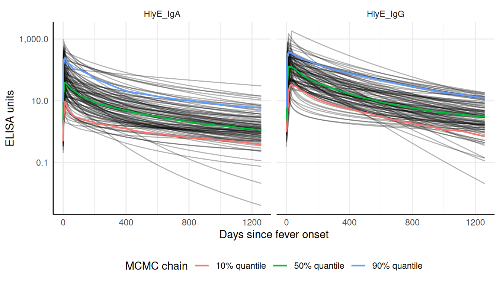
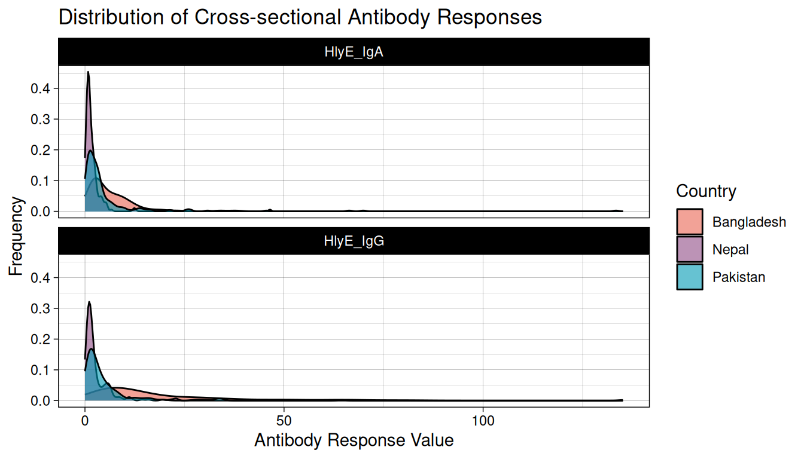
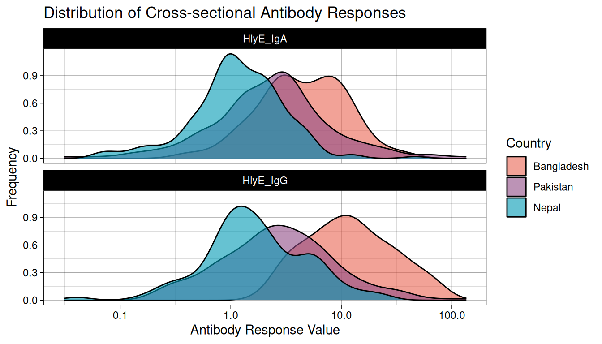
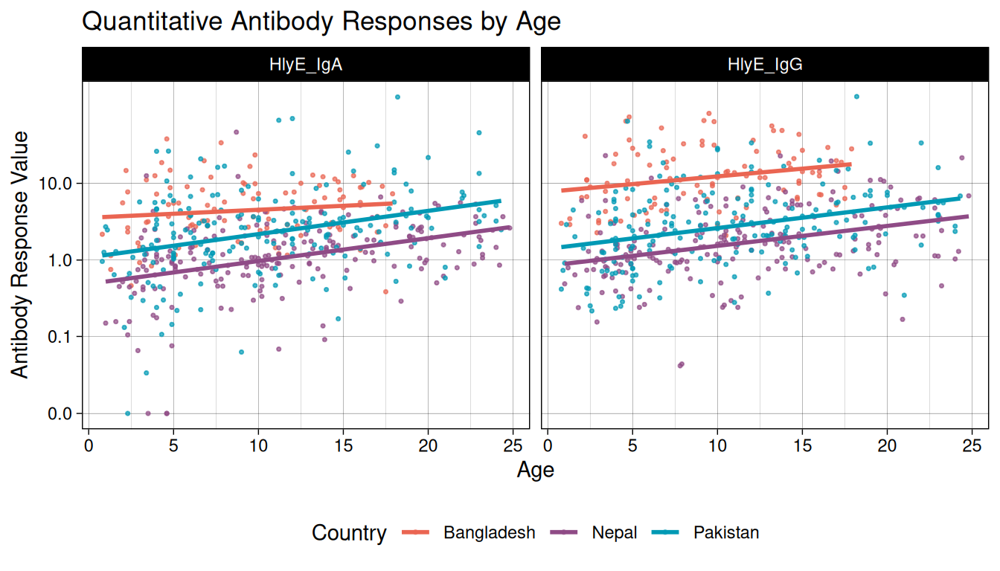
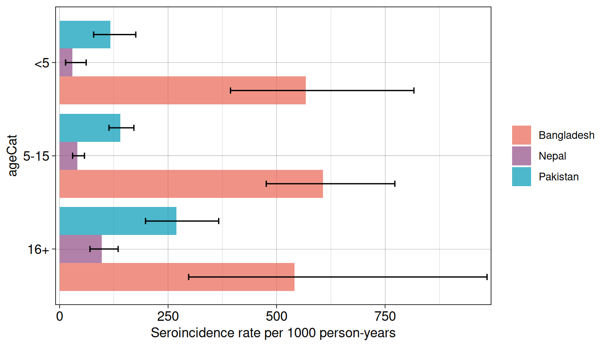

Enteric Fever Seroincidence Vignette
Invalid Date
1 Introduction
This vignette provides users with an example analysis using the serocalculator package by reproducing the analysis for: Estimating typhoid incidence from community-based serosurveys: a multicohort study (Aiemjoy et al. (2022)). We review the methods underlying the analysis and then walk through an example of enteric fever incidence in Pakistan. Note that because this is a simplified version of the analysis, the results here will differ slightly from those presented in the publication.
In this example, users will determine the seroincidence of enteric fever in cross-sectional serosurveys conducted as part of the SeroEpidemiology and Environmental Surveillance (SEES) for enteric fever study in Bangladesh, Nepal, and Pakistan. Longitudinal antibody responses were modeled from 1420 blood culture-confirmed enteric fever cases enrolled from the same countries.
2 Methods
2.1 Load packages
The first step in conducting this analysis is to load our necessary packages. If you haven’t installed already, you will need to do so before loading:
See the Installation instructions for more details.
Once the serocalculator package has been installed, load it into your R environment using library(), along with any other packages you may need for data management; For this example, we will load tidyverse and forcats:
3 Load data
Pathogen-specific sample datasets, noise parameters, and longitudinal antibody dynamics for serocalculator are available on the Serocalculator Data Repository on Open Science Framework (OSF). We will pull this data directly into our R environment.
Note that each dataset has specific formatting and variable name requirements.
3.1 Load and prepare longitudinal parameter data
We will first load the longitudinal curve parameters to set the antibody decay parameters. In this example, these parameters were modeled with Bayesian hierarchical models to fit two-phase power-function decay models to the longitudinal antibody responses among confirmed enteric fever cases.
Formatting Specifications: Data should be imported as a “wide” dataframe with one column for each parameter and one row for each iteration of the posterior distribution for each antigen isotype. Column names must exactly match follow the naming conventions:
| Column Name | Description |
|---|---|
| y0 | Baseline antibody concentration |
| y1 | Peak antibody concentration |
| t1 | Time to peak antibody concentration |
| alpha | Antibody decay rate |
| r | Antibody decay shape |
Note that variable names are case-sensitive
3.2 Visualize curve parameters
We can graph the decay curves with an autoplot() method:
3.3 Load and prepare cross-sectional data
Next, we load our sample cross-sectional data. We will use a subset of results from the SEES dataset. Ideally, this will be a representative sample of the general population without regard to disease status. Later, we will limit our analysis to cross-sectional data from Pakistan.
We have selected hemolysin E (HlyE) as our target antigen and IgG and IgA as our target immunoglobulin isotypes. Users may select different serologic markers depending on what is available in your data. From the original dataset, we rename our result and age variables to the names required by serocalculator.
Formatting Specifications: Cross-sectional population data should be a “long” dataframe with one column for each variable and one row for each antigen isotype resulted for an individual. So the same individual will have more than one row if they have results for more than one antigen isotype. The dataframe can have additional variables, but the two below are required:
| Column Name | Description |
|---|---|
| value | Quantitative antibody response |
| age | Numeric age |
Note that variable names are case sensitive
3.4 Summarize antibody data
We can compute numerical summaries of our cross-sectional antibody data with a summary() method for pop_data objects:
#>
#> n = 1000
#>
#> Distribution of age:
#>
#> # A tibble: 1 × 7
#> n min first_quartile median mean third_quartile max
#> <int> <dbl> <dbl> <dbl> <dbl> <dbl> <dbl>
#> 1 1000 0.8 5.38 10.1 10.7 14.8 24.8
#>
#> Distributions of antigen-isotype measurements:
#>
#> # A tibble: 2 × 7
#> antigen_iso Min `1st Qu.` Median `3rd Qu.` Max `# NAs`
#> <fct> <dbl> <dbl> <dbl> <dbl> <dbl> <int>
#> 1 HlyE_IgA 0 0.949 2.01 3.90 133. 0
#> 2 HlyE_IgG 0.0394 1.18 2.84 6.84 135. 03.5 Visualize antibody data
We examine our cross-sectional antibody data by visualizing the distribution of quantitative antibody responses. Here, we will look at the distribution of our selected antigen and isotype pairs, HlyE IgA and HlyE IgG, across participating countries.

We see that across countries, our data is highly skewed with the majority of responses on the lower end of our data with long tails. Let’s get a better look at the distribution by log transforming our antibody response value.
#> Warning in scale_x_log10(labels = scales::label_comma()): log-10 transformation
#> introduced infinite values.
#> Warning: Removed 4 rows containing non-finite outside the scale range
#> (`stat_density()`).
Once log transformed, our data looks much more normally distributed. In most cases, log transformation will be the best way to visualize serologic data.
Let’s also take a look at how antibody responses change by age.

In this plot, we can see that the highest burden is in Bangladesh, but Nepal has the steepest slope and experiences the greatest change in seroconversion rates by age, with lower exposures at younger ages and higher exposures at older ages.
3.6 Load noise parameters
Next, we must set conditions based on some assumptions about the data and errors that may need to be accounted for. This will differ based on background knowledge of the data.
The biological noise, \(\nu\) (“nu”), represents error from cross-reactivity to other antibodies. It is defined as the 95th percentile of the distribution of antibody responses to the antigen-isotype in a population with no exposure.
Measurement noise, \(\varepsilon\) (“epsilon”), represents measurement error from the laboratory testing process. The relative error is modeled as uniform on \([-\varepsilon, \varepsilon]\), so \(\varepsilon\) is the largest relative deviation a measurement can have from its true value, not a coefficient of variation (CV). Assay precision is often reported as a CV, the ratio of the standard deviation to the mean for replicates, ideally measured across plates rather than within the same plate; under this uniform model the CV equals \(\varepsilon/\sqrt{3}\), so a measured CV corresponds to \(\varepsilon = \sqrt{3}\,\text{CV}\).
Formatting Specifications: Noise parameter data should be a dataframe with one row for each antigen isotype and columns for each noise parameter below.
| Column Name | Description |
|---|---|
| y.low | Lower limit of detection of the assay |
| nu | Biologic noise |
| y.high | Upper limit of detection of the assay |
| eps | Measurement noise |
Note that variable names are case-sensitive.
4 Estimate Seroincidence
Now we are ready to begin estimating seroincidence. We will conduct two separate analyses using two distinct functions, est.incidence and est.incidence.by, to calculate the overall seroincidence and the stratified seroincidence, respectively.
4.1 Overall Seroincidence
Using the function est.incidence, we filter to sites in Pakistan and define the datasets for our cross-sectional data (pop_data), longitudinal parameters (curve_param), and noise parameters (noise_param). We also define the antigen-isotype pairs to be included in the estimate (antigen_isos). Here, we have chosen to use two antigen isotypes, but users can add additional pairs if available.
#> # A tibble: 1 × 11
#> est.start incidence.rate SE CI.lwr CI.upr se_type coverage log.lik
#> <dbl> <dbl> <dbl> <dbl> <dbl> <chr> <dbl> <dbl>
#> 1 0.1 0.158 0.0122 0.136 0.184 standard 0.95 -1016.
#> # ℹ 3 more variables: iterations <int>, antigen.isos <chr>,
#> # nlm.convergence.code <ord>4.2 Stratified Seroincidence
We can also produce stratified seroincidence estimates. Users can select one or more stratification variables in their cross-sectional population dataset. Let’s compare estimates across all countries and by age group.
#> Warning: The number of observations in `data` varies between antigen isotypes, for at
#> least one stratum.
#> Sample size for each stratum will be calculated as the minimum number of
#> observations across all antigen isotypes.
#> # A tibble: 6 × 4
#> Country ageCat antigen_iso n
#> <chr> <fct> <fct> <int>
#> 1 Nepal <5 HlyE_IgA 42
#> 2 Nepal <5 HlyE_IgG 40
#> 3 Nepal 5-15 HlyE_IgA 106
#> 4 Nepal 5-15 HlyE_IgG 109
#> 5 Nepal 16+ HlyE_IgA 52
#> 6 Nepal 16+ HlyE_IgG 51
#> Seroincidence estimated given the following setup:
#> a) Antigen isotypes : HlyE_IgG, HlyE_IgA
#> b) Strata : Country, ageCat
#>
#> Seroincidence estimates:
#> # A tibble: 9 × 15
#> Stratum Country ageCat n est.start incidence.rate SE CI.lwr CI.upr
#> <chr> <chr> <fct> <int> <dbl> <dbl> <dbl> <dbl> <dbl>
#> 1 Stratum 1 Banglad… <5 24 0.1 0.567 0.105 0.394 0.816
#> 2 Stratum 2 Banglad… 5-15 65 0.1 0.606 0.0749 0.476 0.772
#> 3 Stratum 3 Banglad… 16+ 11 0.1 0.541 0.165 0.297 0.985
#> 4 Stratum 4 Nepal <5 40 0.1 0.0292 0.0111 0.0139 0.0614
#> 5 Stratum 5 Nepal 5-15 106 0.1 0.0415 0.00687 0.0300 0.0574
#> 6 Stratum 6 Nepal 16+ 51 0.1 0.0972 0.0163 0.0701 0.135
#> 7 Stratum 7 Pakistan <5 43 0.1 0.117 0.0241 0.0785 0.176
#> 8 Stratum 8 Pakistan 5-15 115 0.1 0.140 0.0145 0.114 0.171
#> 9 Stratum 9 Pakistan 16+ 42 0.1 0.269 0.0423 0.198 0.367
#> # ℹ 6 more variables: se_type <chr>, coverage <dbl>, log.lik <dbl>,
#> # iterations <int>, antigen.isos <chr>, nlm.convergence.code <ord>Note that we get a warning about uneven observations between antigen isotypes, meaning some participants do not have results for both HlyE IgA and HlyE IgG. The warning indicates that the “Sample size for each stratum will be calculated as the minimum number of observations across all antigen isotypes”, so only participants with both antigen isotypes are included. To avoid this, filter the dataset to include only records with all specified antigen isotypes.
We set curve_strata_varnames = NULL to avoid stratification in the “curves” dataset because it does not include our strata variables. Without this, a warning appears: “curve_params is missing all strata variables, and will be used unstratified”. To stratify based on variables that exist in a longitudinal curve parameters dataset, specify variables using curve_strata_varnames, similar to how noise_strata_varnames is used for “noise” above.
Finally, let’s visualize our seroincidence estimates by country and age category using autoplot():

5 Comparing Seroincidence Rates
After estimating seroincidence rates across different groups, we may want to statistically compare these rates to determine if observed differences are significant. The compare_seroincidence() function performs two-sample z-tests to compare seroincidence rates.
5.1 Comparing Two Individual Estimates
First, let’s compare seroincidence rates between two countries directly. We’ll estimate seroincidence for Bangladesh and Nepal separately, then compare them:
#>
#> Two-sample z-test for difference in seroincidence rates
#>
#> data: seroincidence estimates
#> z = 9.311, p-value < 2.2e-16
#> alternative hypothesis: true difference in incidence rates is not equal to 0
#> 95 percent confidence interval:
#> 0.4224426 0.6477095
#> sample estimates:
#> incidence rate 1 incidence rate 2 difference
#> 0.58838264 0.05330655 0.53507609The output follows the standard htest format in R, providing the z-statistic, p-value, estimates for both groups, and a confidence interval for the difference in incidence rates.
5.2 Comparing All Pairs of Stratified Estimates
For stratified analyses, we can compare all pairs of strata at once. This is particularly useful when we have multiple groups and want a comprehensive view of all pairwise differences:
#> # A tibble: 36 × 14
#> Stratum_1 Stratum_2 Country.1 ageCat.1 Country.2 ageCat.2 incidence.rate.1
#> * <chr> <chr> <chr> <fct> <chr> <fct> <dbl>
#> 1 Stratum 1 Stratum 2 Bangladesh <5 Bangladesh 5-15 0.567
#> 2 Stratum 1 Stratum 3 Bangladesh <5 Bangladesh 16+ 0.567
#> 3 Stratum 1 Stratum 4 Bangladesh <5 Nepal <5 0.567
#> 4 Stratum 1 Stratum 5 Bangladesh <5 Nepal 5-15 0.567
#> 5 Stratum 1 Stratum 6 Bangladesh <5 Nepal 16+ 0.567
#> 6 Stratum 1 Stratum 7 Bangladesh <5 Pakistan <5 0.567
#> 7 Stratum 1 Stratum 8 Bangladesh <5 Pakistan 5-15 0.567
#> 8 Stratum 1 Stratum 9 Bangladesh <5 Pakistan 16+ 0.567
#> 9 Stratum 2 Stratum 3 Bangladesh 5-15 Bangladesh 16+ 0.606
#> 10 Stratum 2 Stratum 4 Bangladesh 5-15 Nepal <5 0.606
#> # ℹ 26 more rows
#> # ℹ 7 more variables: incidence.rate.2 <dbl>, difference <dbl>, SE <dbl>,
#> # z.statistic <dbl>, p.value <dbl>, CI.lwr <dbl>, CI.upr <dbl>This produces a table with one row for each pairwise comparison, showing: - The two strata being compared - Incidence rates for each group - The difference in rates - Standard error of the difference - Z-statistic - P-value - 95% confidence interval for the difference
We can use this to identify which differences are statistically significant (typically using p < 0.05 as a threshold).
6 Accounting for Clustered Sampling Designs
In many survey designs, observations are clustered (e.g., multiple individuals from the same household, geographic area, or school). When observations within clusters are more similar to each other than to observations from different clusters, standard errors that ignore clustering will be too small, leading to overconfident inference.
The serocalculator package supports cluster-robust standard error estimation through the cluster_var parameter.
6.1 Example: Household Clustering
The SEES data includes cluster identifiers (cluster for geographic clusters, catchment for health facility catchment areas, and Country). These variables are nested: clusters are nested within catchments, which are nested within countries. We can use these to account for within-cluster correlation:
#> # A tibble: 1 × 11
#> est.start incidence.rate SE CI.lwr CI.upr se_type coverage log.lik
#> <dbl> <dbl> <dbl> <dbl> <dbl> <chr> <dbl> <dbl>
#> 1 0.1 0.158 0.0214 0.122 0.206 cluster-robust 0.95 -1016.
#> # ℹ 3 more variables: iterations <int>, antigen.isos <chr>,
#> # nlm.convergence.code <ord>
#> # A tibble: 1 × 11
#> est.start incidence.rate SE CI.lwr CI.upr se_type coverage log.lik
#> <dbl> <dbl> <dbl> <dbl> <dbl> <chr> <dbl> <dbl>
#> 1 0.1 0.158 0.0122 0.136 0.184 standard 0.95 -1016.
#> # ℹ 3 more variables: iterations <int>, antigen.isos <chr>,
#> # nlm.convergence.code <ord>Notice that the point estimates (incidence rates) are identical between the two analyses, but the standard errors are larger with cluster-robust estimation. This reflects the reduced effective sample size due to within-cluster correlation.
The mathematical details of cluster-robust standard errors are explained in the Cluster-robust standard errors section of the methodology article.
6.2 Clustering with Stratified Analysis
Clustering can also be combined with stratified analysis using est_seroincidence_by():
#> Warning: `curve_params` is missing all strata variables and will be used unstratified.
#> ℹ To avoid this warning, specify the desired set of stratifying variables in
#> the `curve_strata_varnames` and `noise_strata_varnames` arguments to
#> `est_seroincidence_by()`.
#> Warning: `noise_params` is missing all strata variables and will be used unstratified.
#> ℹ To avoid this warning, specify the desired set of stratifying variables in
#> the `curve_strata_varnames` and `noise_strata_varnames` arguments to
#> `est_seroincidence_by()`.
#> Seroincidence estimated given the following setup:
#> a) Antigen isotypes : HlyE_IgG, HlyE_IgA
#> b) Strata : catchment
#>
#> Seroincidence estimates:
#> # A tibble: 2 × 14
#> Stratum catchment n est.start incidence.rate SE CI.lwr CI.upr se_type
#> <chr> <chr> <int> <dbl> <dbl> <dbl> <dbl> <dbl> <chr>
#> 1 Stratum… aku 100 0.1 0.114 0.0216 0.0788 0.165 cluste…
#> 2 Stratum… kgh 100 0.1 0.217 0.0161 0.188 0.251 cluste…
#> # ℹ 5 more variables: coverage <dbl>, log.lik <dbl>, iterations <int>,
#> # antigen.isos <chr>, nlm.convergence.code <ord>
#> Warning: `curve_params` is missing all strata variables and will be used unstratified.
#> ℹ To avoid this warning, specify the desired set of stratifying variables in
#> the `curve_strata_varnames` and `noise_strata_varnames` arguments to
#> `est_seroincidence_by()`.
#> `noise_params` is missing all strata variables and will be used unstratified.
#> ℹ To avoid this warning, specify the desired set of stratifying variables in
#> the `curve_strata_varnames` and `noise_strata_varnames` arguments to
#> `est_seroincidence_by()`.
#> Seroincidence estimated given the following setup:
#> a) Antigen isotypes : HlyE_IgG, HlyE_IgA
#> b) Strata : catchment
#>
#> Seroincidence estimates:
#> # A tibble: 2 × 14
#> Stratum catchment n est.start incidence.rate SE CI.lwr CI.upr se_type
#> <chr> <chr> <int> <dbl> <dbl> <dbl> <dbl> <dbl> <chr>
#> 1 Stratum… aku 100 0.1 0.114 0.0135 0.0905 0.144 standa…
#> 2 Stratum… kgh 100 0.1 0.217 0.0223 0.177 0.265 standa…
#> # ℹ 5 more variables: coverage <dbl>, log.lik <dbl>, iterations <int>,
#> # antigen.isos <chr>, nlm.convergence.code <ord>Within each stratum (catchment), the cluster-robust standard errors are larger than the standard errors, appropriately accounting for geographic clustering within each catchment area.
6.3 Understanding the Impact
When cluster-robust standard errors are used:
- Point estimates (incidence rates) remain unchanged
- Standard errors typically increase by 5-15% to reflect within-cluster correlation
- The
summary()output includes ase_typecolumn indicating “cluster-robust” vs “standard” - Confidence intervals appropriately widen to account for reduced effective sample size
6.4 Cluster-Robust Country Comparisons
For our main findings comparing all three countries, we should use cluster-robust standard errors to properly account for the geographic clustering in the SEES study:
#> [1] "Bangladesh vs Nepal:"
#>
#> Two-sample z-test for difference in seroincidence rates
#>
#> data: seroincidence estimates
#> z = 54.102, p-value < 2.2e-16
#> alternative hypothesis: true difference in incidence rates is not equal to 0
#> 95 percent confidence interval:
#> 0.5156917 0.5544605
#> sample estimates:
#> incidence rate 1 incidence rate 2 difference
#> 0.58838264 0.05330655 0.53507609
#> [1] "Bangladesh vs Pakistan:"
#>
#> Two-sample z-test for difference in seroincidence rates
#>
#> data: seroincidence estimates
#> z = 19.126, p-value < 2.2e-16
#> alternative hypothesis: true difference in incidence rates is not equal to 0
#> 95 percent confidence interval:
#> 0.3859467 0.4740769
#> sample estimates:
#> incidence rate 1 incidence rate 2 difference
#> 0.5883826 0.1583708 0.4300118
#> [1] "Nepal vs Pakistan:"
#>
#> Two-sample z-test for difference in seroincidence rates
#>
#> data: seroincidence estimates
#> z = -4.67, p-value = 3.012e-06
#> alternative hypothesis: true difference in incidence rates is not equal to 0
#> 95 percent confidence interval:
#> -0.14915874 -0.06096985
#> sample estimates:
#> incidence rate 1 incidence rate 2 difference
#> 0.05330655 0.15837084 -0.10506430The cluster-robust comparisons provide more accurate inference by accounting for within-cluster correlation in the study design.
7 Conclusions
Using cluster-robust standard errors to account for geographic clustering in the SEES study, we observe significant variation in enteric fever seroconversion rates across the three countries. Bangladesh has the highest overall seroconversion rate at 588.4 per 1000 person-years (95% CI: 574.9-602.2), followed by Pakistan at 158.4 per 1000 person-years (95% CI: 121.6-206.3), and Nepal at 53.3 per 1000 person-years (95% CI: 41.2-69). Pairwise comparisons show Bangladesh has significantly higher rates than both Nepal (p < 0.001) and Pakistan (p < 0.001), while the difference between Nepal and Pakistan is also significant (p < 0.001).
Across age groups, the highest rates are observed among 5- to 15-year-olds in Bangladesh (606 per 1000 person-years), which is 15 times higher than Nepal in the same age group (41 per 1000 person-years). These findings highlight substantial geographic variation in enteric fever transmission, emphasizing the need for targeted prevention strategies tailored to local epidemiology.
The cluster-robust approach properly accounts for within-cluster correlation arising from the geographic sampling design. While point estimates remain unchanged, the cluster-robust standard errors and confidence intervals provide more accurate uncertainty quantification, ensuring valid statistical inference. This adjustment is particularly important for survey designs where observations within clusters (e.g., households, schools, or geographic areas) are correlated, as failing to account for clustering can lead to underestimated standard errors and overly narrow confidence intervals.
serocalculator offers an efficient and reproducible approach to estimating seroconversion rates with proper accounting for complex survey designs, enabling data-driven insights for disease surveillance and public health decision-making.
8 Acknowledgments
We gratefully acknowledge the study participants for their valuable time and interest in participating in these studies. Special thanks to our collaborators at Sabin Vaccine Institute, Aga Khan University (Karachi, Pakistan), Child Health Research Foundation (Dhaka, Bangladesh), and Dhulikhel Hospital, Kathmandu University Hospital (Dhulikhel, Nepal).
9 Funding
This project was supported by grants from the National Institutes of Health (NIH) National Institute of Allergy and Infectious Disease (R21AI176416), the NIH Fogarty International Center (K01TW012177) and the Bill and Melinda Gates Foundation.
10 References
Aiemjoy, K., Seidman J. C., Saha S., Munira S. J., Islam Sajib M. S., and Sarkar Sium S. M. al. 2022. “Estimating Typhoid Incidence from Community-Based Serosurveys: A Multicohort Study.” The Lancet Microbe 3 (8): e578–87. https://doi.org/10.1016/S2666-5247(22)00114-8.